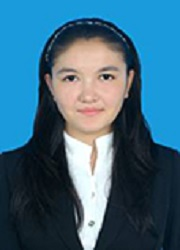

一个新疆籍少数民族的教育梦
吉尔哈丽•提力瓦尔地、女、柯尔克孜族、中共预备党员、生命科学学院生物科学专业2012级的学生。曾任民族教育学院学生会文艺部部长，贷款服务团培训部部长和副秘书长；曾获校长奖学金、一等奖学金（两次）、明德奖学金、连续三年获少数民族齐飞奖学金和优秀学生称号、东北师范大学“五•四”红旗团员荣誉称号、东北师范大学第二十一届“中国梦•教育梦”教师技能比赛总决赛三等奖、小组决赛二等奖、最佳说课奖、“生态•东师”东北师范大学本部校区校园生物生态调查委托重大项目参与者、生命科学学院第一届少数民族教师技能大赛二等奖、生命科学学院梁佩仪科研人才培养三等奖、吉林大学英语协会英语口语演讲比赛二等奖、东北师范大学图书馆文印工作室优秀实习生。
克服语言障碍，争做学习楷模
她来自祖国西部边境地区克孜勒苏柯尔克孜自治州，是祖国太阳落的最晚的地方，也许是因为生活的地方太小太偏僻，她从小就梦想着有一天能够走出新疆，去内地学习，看看外面的世界。她深信“知识改变命运”，这个信念使她一直努力学习，从小学到高中学习成绩一直名列前茅，多次获得三好学生、优秀学生、优秀团员等称号。终于高考为这个柯尔克孜族姑娘开启了去内地学习的梦想之路。2010年，她以优秀的成绩考上了东北师范大学。
然而来到内地学习，一切并不是她所想的那样容易。首先语言问题成了她最大的烦恼。从小用母语（柯尔克孜语）交流，用母语学习，内地这样的纯汉语学习环境让她有些不知所措。但她从未想过放弃，因为她知道“努力不一定成功，但放弃一定失败”。她化压力为动力，两年的预科过程中，她每天早晨苦练汉语、英语从ABC学起、每天以她支离破碎的汉语跟他人交流、积极参加学院组织的英语补习班、主动参加各种校园集体活动，不放过任何一个学习的机会。功夫不负有心人，两年的刻苦学习她得到了相应的回报，不仅汉语读写说能力有大大提高，在少数民族汉语水平测试中获得四级证书，英语也有了一定的基础。
2012年9月，她进入生命科学学院专业学习阶段。第一天开班会看着那些来自祖国四面八方的优秀学子，讲台上滔滔不绝的老师，她有些胆怯，甚至有些退缩。一来她高中基础薄弱，二来老师说的话她都半懂不懂，种种原因让她失去了自信。正式开课后，为了跟上课程进度，她勤学苦练，别人学一小时她学两小时，连午休时间她都在补笔记。在老师和同学们的帮助下，她渐渐地跟上了课程进度。在大一第一学期的期末考试中，她的成绩进入年级前5%，看到成绩的她真是欣喜若狂，这不仅是对她的一种鼓励，也是对她努力的一种肯定。这让她坚信“努力必有回报”。在大二、大三她一如既往的努力学习、双倍付出，成绩稳居前五，前后获得校长奖学金、明德奖学金、少数民族齐飞奖学金和优秀学生称号等大大小小的十几项奖项。她不仅学好专业课，在教师技能方面也下苦功，大学英语四级考试取得554分，吉林省普通话水平测试中取得二级甲等，在院级以及校级教师技能比赛中表现突出。经过这几年的努力，这个来自新疆，母语为非汉语，基础薄弱的少数民族学生，横跨半个中国来到东北学习，以她坚持不懈的学习精神和坚定不移的梦想，成为了在校少数民族学生以及汉族学生的学习榜样。
感恩点滴真情，倾情回馈社会
她知道，她之所以能在内地学习，是因为受益于国家免费师范生的政策。她也知道，她能在学习方面有这么大的进步，离不开老师和同学们的帮助。当她初来乍到之时，不管是老师还是同学们都给新疆学生给予无微不至的照顾。老师们在学习和生活方面的问寒问暖，同学们在平时生活中的帮助深深的打动了她。说到学校、老师和同学们对她的帮助她都喉咙哽咽。她受益于国家政策，老师和同学们的帮助温暖了她，她也想通过她自己的行动把这种温暖传递给他人。
从大学第二年开始，她在自己有难的情况下拿出自己一部分新疆补助帮助其他更有难的同学、假日在长春市动植物公园和胜利公园当志愿者、寒暑假在家乡为孩子进行免费的全科辅导、在自己能所力及的范围内组织学生为边境地区的孩子捐赠衣物。有一句话说的好“最好的幸福就是给别人以帮助”。作为少数民族学生的学习楷模，她更关心身边的少数民族同学，她组织少数民族学生一起学习汉语，带领他们一起练教师技能。在本科期间，在贷款服务团工作三年，虽然是一个勤工俭学岗位，但在她看来这是一个服务他人，回报社会的机会。她热心服务于每一个在校以及离校的贷款学生，带领学生为我校受资助学生捐款，得到了贷款办公室的老师和同学们的表扬。尤其是我校新疆籍毕业生，提到她，都对她赞不绝口以及感激不尽。她以平时勤恳的工作态度，向普通同学展现了工作的楷模，以热心助人的品格，向全社会展示了现代少数民族女大学生的人格魅力。
坚定党员信念，立志教书育人
来到东北师范大学的第一时间，她向党组织提交了入党申请书。这也是她父亲在送她到火车站时一再向她嘱咐的一件事。多次申请后，她在民族教育学院参加党课并以优秀的成绩毕业党校，发展成为一名积极分子。在本科阶段，她在繁忙的学习中抽出时间学习党的政策和党的会议精神，提高自己的政治素质，在学习、工作和生活方面严格要求自己，努力达到大学生党员的标准，在2015年光荣加入中国共产党，并参与我校组织的“井冈山红色体验夏令营”，参观了红色革命基地井冈山之后，她的党性和觉悟更高了一层次，这次的学习让她亲身体验了井冈山精神，学习结束后含着泪说：“我会努力做一名合格的党员，努力以自己的行动影响他人，让大家从我的形象中了解共产党人”。
在家乡的沙漠中，生长着一种树，叫胡杨。它“生而一千年不死，死而一千年不倒，倒而一千年不朽”。她想像那胡杨一样在骄阳中不屈地拼搏，在严寒中坚强的屹立。她相信一个人多一份执着，就会多一份收获。她是一名来自贫困地区的少数民族学生，她并不是最优秀的，但对梦想的执着和努力毫不逊色于别人，走出了新疆，也看到了大城市的发展，但是她不会忘记来内地学习的初衷，不会忘记父老乡亲们的重托，更不会忘记山区孩子艰苦教学条件。我们都相信她怀着这颗赤诚的心和无限的正能量坚守自己的理想与信念，她会在以后的路上一如既往的努力，为她的“中国梦•教育梦”而奋斗，为家乡落后的教育事业，更为中华民族的伟大复兴梦做贡献。
她来自祖国西部边境地区克孜勒苏柯尔克孜自治州，是祖国太阳落的最晚的地方，也许是因为生活的地方太小太偏僻，她从小就梦想着有一天能够走出新疆，去内地学习，看看外面的世界。她深信“知识改变命运”，这个信念使她一直努力学习，从小学到高中学习成绩一直名列前茅，多次获得三好学生、优秀学生、优秀团员等称号。终于高考为这个柯尔克孜族姑娘开启了去内地学习的梦想之路。2010年，她以优秀的成绩考上了东北师范大学。
然而来到内地学习，一切并不是她所想的那样容易。首先语言问题成了她最大的烦恼。从小用母语（柯尔克孜语）交流，用母语学习，内地这样的纯汉语学习环境让她有些不知所措。但她从未想过放弃，因为她知道“努力不一定成功，但放弃一定失败”。她化压力为动力，两年的预科过程中，她每天早晨苦练汉语、英语从ABC学起、每天以她支离破碎的汉语跟他人交流、积极参加学院组织的英语补习班、主动参加各种校园集体活动，不放过任何一个学习的机会。功夫不负有心人，两年的刻苦学习她得到了相应的回报，不仅汉语读写说能力有大大提高，在少数民族汉语水平测试中获得四级证书，英语也有了一定的基础。
2012年9月，她进入生命科学学院专业学习阶段。第一天开班会看着那些来自祖国四面八方的优秀学子，讲台上滔滔不绝的老师，她有些胆怯，甚至有些退缩。一来她高中基础薄弱，二来老师说的话她都半懂不懂，种种原因让她失去了自信。正式开课后，为了跟上课程进度，她勤学苦练，别人学一小时她学两小时，连午休时间她都在补笔记。在老师和同学们的帮助下，她渐渐地跟上了课程进度。在大一第一学期的期末考试中，她的成绩进入年级前5%，看到成绩的她真是欣喜若狂，这不仅是对她的一种鼓励，也是对她努力的一种肯定。这让她坚信“努力必有回报”。在大二、大三她一如既往的努力学习、双倍付出，成绩稳居前五，前后获得校长奖学金、明德奖学金、少数民族齐飞奖学金和优秀学生称号等大大小小的十几项奖项。她不仅学好专业课，在教师技能方面也下苦功，大学英语四级考试取得554分，吉林省普通话水平测试中取得二级甲等，在院级以及校级教师技能比赛中表现突出。经过这几年的努力，这个来自新疆，母语为非汉语，基础薄弱的少数民族学生，横跨半个中国来到东北学习，以她坚持不懈的学习精神和坚定不移的梦想，成为了在校少数民族学生以及汉族学生的学习榜样。
感恩点滴真情，倾情回馈社会
她知道，她之所以能在内地学习，是因为受益于国家免费师范生的政策。她也知道，她能在学习方面有这么大的进步，离不开老师和同学们的帮助。当她初来乍到之时，不管是老师还是同学们都给新疆学生给予无微不至的照顾。老师们在学习和生活方面的问寒问暖，同学们在平时生活中的帮助深深的打动了她。说到学校、老师和同学们对她的帮助她都喉咙哽咽。她受益于国家政策，老师和同学们的帮助温暖了她，她也想通过她自己的行动把这种温暖传递给他人。
从大学第二年开始，她在自己有难的情况下拿出自己一部分新疆补助帮助其他更有难的同学、假日在长春市动植物公园和胜利公园当志愿者、寒暑假在家乡为孩子进行免费的全科辅导、在自己能所力及的范围内组织学生为边境地区的孩子捐赠衣物。有一句话说的好“最好的幸福就是给别人以帮助”。作为少数民族学生的学习楷模，她更关心身边的少数民族同学，她组织少数民族学生一起学习汉语，带领他们一起练教师技能。在本科期间，在贷款服务团工作三年，虽然是一个勤工俭学岗位，但在她看来这是一个服务他人，回报社会的机会。她热心服务于每一个在校以及离校的贷款学生，带领学生为我校受资助学生捐款，得到了贷款办公室的老师和同学们的表扬。尤其是我校新疆籍毕业生，提到她，都对她赞不绝口以及感激不尽。她以平时勤恳的工作态度，向普通同学展现了工作的楷模，以热心助人的品格，向全社会展示了现代少数民族女大学生的人格魅力。
坚定党员信念，立志教书育人
来到东北师范大学的第一时间，她向党组织提交了入党申请书。这也是她父亲在送她到火车站时一再向她嘱咐的一件事。多次申请后，她在民族教育学院参加党课并以优秀的成绩毕业党校，发展成为一名积极分子。在本科阶段，她在繁忙的学习中抽出时间学习党的政策和党的会议精神，提高自己的政治素质，在学习、工作和生活方面严格要求自己，努力达到大学生党员的标准，在2015年光荣加入中国共产党，并参与我校组织的“井冈山红色体验夏令营”，参观了红色革命基地井冈山之后，她的党性和觉悟更高了一层次，这次的学习让她亲身体验了井冈山精神，学习结束后含着泪说：“我会努力做一名合格的党员，努力以自己的行动影响他人，让大家从我的形象中了解共产党人”。
在家乡的沙漠中，生长着一种树，叫胡杨。它“生而一千年不死，死而一千年不倒，倒而一千年不朽”。她想像那胡杨一样在骄阳中不屈地拼搏，在严寒中坚强的屹立。她相信一个人多一份执着，就会多一份收获。她是一名来自贫困地区的少数民族学生，她并不是最优秀的，但对梦想的执着和努力毫不逊色于别人，走出了新疆，也看到了大城市的发展，但是她不会忘记来内地学习的初衷，不会忘记父老乡亲们的重托，更不会忘记山区孩子艰苦教学条件。我们都相信她怀着这颗赤诚的心和无限的正能量坚守自己的理想与信念，她会在以后的路上一如既往的努力，为她的“中国梦•教育梦”而奋斗，为家乡落后的教育事业，更为中华民族的伟大复兴梦做贡献。